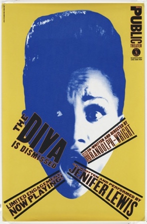
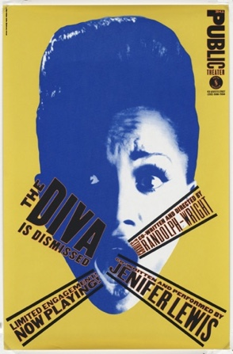
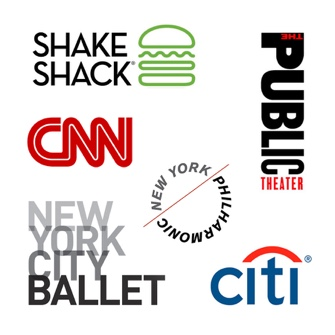

PAULA SCHER
Discuss how Paula Scher contributed to the world of Graphic Design
INTRO
Paula Scher is an American graphic designer who grew up in Philadelphia and Washington but was originally from Virgina and was born 6th of October 1948. Throughout the years Paula Scher had developed and broadened her experience within the design industry by pushing her boundaries into not just graphics but also painting, educating and becoming the first female principal at Pentagram in 1991 which is known for being the world’s largest independent design consultancy. Paula Scher’s work questioned the stereotypical approach to the design process of her time and this has lead to her becoming a huge contributor to Graphic Design over the last 30 years.
In my essay i plan to explore and explain the various stages throughout Paula Scher’s life that has affected and guided her on the road success within Graphic Design as well as discussing the various contributions her work has had on the Graphic Design industry as a whole. I will do this by first, going back to her childhood years to see where her original interest and ideas for design began which lead to her using them in a lifelong career in design.
I also plan to cover her various career moves which lead to one of her most notable achievement of becoming the first female principal at Pentagram and well as being recognised with more than 300 awards from international design associations, with her work being showcased in the Museum of Modern Art, the Library of Congress, the Museum für Gestaltung and the Centre Georges Pompidou. Paula Scher’s work is recognised globally as she developed and unique and eye-catching approach to design with illustrations and type however she is probably best known for her more recent work on large brand and identity projects such as Citibank, Windows 8, MoMA and The Metropolitan Opera in New York.
My focus is that by the end of this essay I will have successfully demonstrated and given examples of how Paula Scher is thought to be one to the leading contributors within Graphic Design.
WHO IS PAULA SCHER?
“You have to be in a state of play to design. If you’re not in a state of play, you can’t make anything.”
From a young age, Paula Scher was intrigued by the concept of design, starting as a child by creating simple drawings as a way of expressing herself as well as using it as a way to clear the mind and set herself free. These habits and feelings followed her into her adult years as she would still express how she finds drawing and painting therapeutic and uses it as a way of escaping reality from time to time.
Scher pursued her passion for art and design in the Tyler School of Arts in Elkins Park Pennsylvania and it was her she established her unique style of creating design using typography as illustration due to her lack of strength in drawing at this stage in her life. However Scher showed signs of promise in her younger years that she would later become a successful designer as she would talk of how in her high school years she would have taken weekend art classes at Corcoran College of Art and Design to further her skill set and interest as well as making all the poster advertisements needed for the school’s events.
During her time in the School of Arts, she experimented using many mediums but it wasn’t until she discovered Graphic Design in her junior year that she felt she’d found her niche. In graphic design she was taught the important skill of problem solving which involved her questioning layout, shape, form and visual messaging which lead to her creating many abstract pieces of work. Stanislaw Zagorski was Scher’s tutor at the time she found her true passion for design as he helped guide her towards her distinctive style of creating imagery using type when she showed signs of frustration in her illustration major. It wasn’t until 1970 that Paula Scher qualified with a Bachelors in Fine Art from the Tyler School of Arts.
Strangely there were no other artists within Scher’s family and her mother and father were both skeptical of the idea of her attending art school as her father was a photogrammetric engineer who constructed all the government maps and her mother insisted on Paula completing a qualification that allowed her to teach before taking a leap of faith in the design industry. Her father’s work in maps influenced Paula’s work in her later years when she focused on creating fine art pieces that developed into a series which were then compiled into a book called Maps in 2011.

HER WORK
 

“Type has spirit. Type doesn’t have to be this clean mechanical thing that is simply doing its job. It can be this marvelous thing to engage with.”
“You’re not changing somebody, you’re making them a more perfect vision than when you started.”